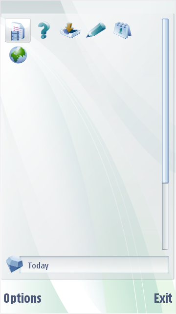
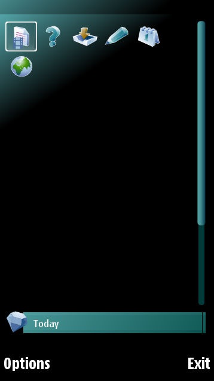

Pinboard
The Pinboard application main area consists of a background graphic.
The mobile phone user can choose to view the items in a grid or list
format. The Pinboard application consists of the following parts:
Background
The application background creates a frame where the Pinboard items can
be placed. The background graphics can be theme-specific. The
application background has the same structure as the Calendar or pop-up
window backgrounds. The background consists of nine bitmaps:
- Four corner bitmaps
- Four side bitmaps
- Center bitmap
You can design the corner bitmaps independently. The side and center
area graphics can be tiled or equal the maximum size of the component
area.
Highlight
The displayed highlight depends on the selected view format. If the
format is a grid, the highlight used is the one defined for all grids.
If the items are displayed in a list, the highlight used is the one
defined for lists.
Title/search string entry
The title of the focused item and search string entry are displayed in
the general input highlight graphics.
Lower
screen area
The lower screen area contains the general UI background graphics. If
the control pane has an area-specific background image defined, it is
displayed. The softkey color is the one defined for softkeys in
general.
The figure below illustrates a default S60 Pinboard and a customized
Pinboard.
 
Figure:
Default S60 Pinboard
and Customised S60 Pinboard
Note:
The center section is
used as wallpaper. Mobile device users can replace the wallpaper with
their own image.